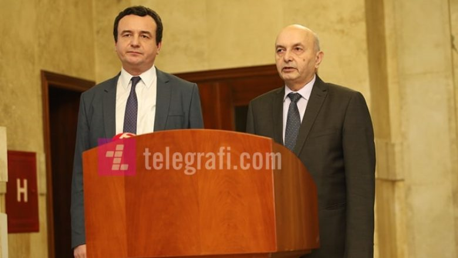
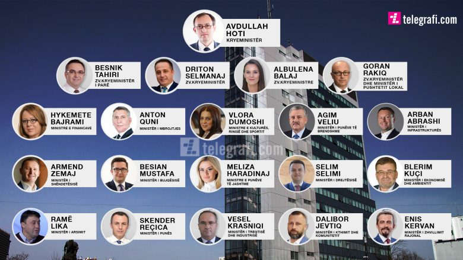
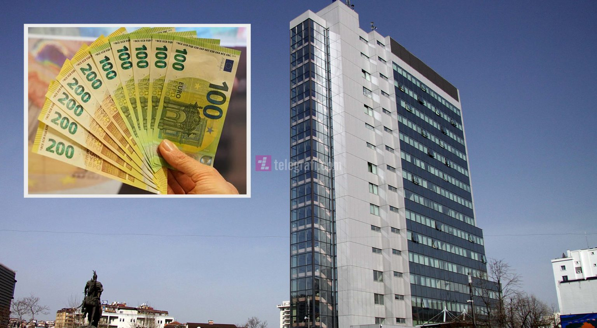

Top ngjarjet e vitit 2020 – ballafaqimi me pandeminë, rrëzimi i dy qeverive dhe aktakuzat e para nga Specialja

Përveç ngjarjeve politike, si formimi dhe rënia e dy qeverive, ftesat e Gjykatës Speciale për ish-liderët e UÇK-së, dialogu Kosovë-Serbi etj, vendi është përballur edhe me pandeminë COVID-19.
Gjatë këtij viti po ashtu është arritur një marrëveshje ekonomike në Washington në mes të Kosovës dhe Serbisë, në praninë e presidentit amerikan Donald Trump, ndërsa tetori gjeti Kosovën me një ndër skandalet më të mëdha, atë të vjedhjes të 2.1 milionë eurove nga Thesari i Shtetit. Më poshtë, Telegrafi.com ju sjellë një kronologji të ngjarjeve kryesore që kanë shënuar vitin 2020.
Nënshkrimi i marrëveshjes për bashkëqeverisje LVV-LDK
Në atë kohë, edhe kryetari i LDK-së, Isa Mustafa kishte thënë se kanë arritur marrëveshje që është në dobi të Kosovës dhe është në interes të ndryshimeve që duhet të ndodhin në vend.
Mocioni i mosbesimit- bie Qeveria Kurti Në kohën kur vendi përballej me pandeminë, edhe zhvillimet politike ishin në kulm. Lidhja Demokratike e Kosovës, partneri në koalicion i Lëvizjes Vetëvendosje, kishte ngritur mocion mosbesimit për të rrëzuar Qeverinë Kurti.
Votimi i Qeverisë Hoti
Më shumë se një muaj pas arritjes së marrëveshjes për bashkëqeverisje ndërmjet LDK dhe AAK-së, më 3 qershor Kuvendi i Kosovës me 61 vota pro, 24 kundër dhe 1 abstenim kishte votuar për Qeverinë Hoti. Qeveria Hoti ishte votuar pas vendimit të Gjykatës Kushtetuese, që i kishte dhënë të drejtë presidentit të atëhershëm të Kosovës, Hashim Thaçi në mandatimin e Hotit për formim të qeverisë së re.
Vazhdimi i dialogut Kosovë-Serbi
Pas një pauze në dialogun Kosovë-Serbi, në korrik të 2020 presidenti i Francës, Emmanuel Macron dhe kancelaraja gjermane, Angela Merkel kishin dalë me një deklaratë të përbashkët pas mbajtjes së Samitit të Parisit, ku u bë e ditur se dialogu mes Kosovës e Serbisë do të rifillojë më 12 korrik të 2020-së me një video-konferencë, ndërkaq po ashtu më 16 korrik do të vazhdohet me takimin në Bruksel.
Rimëkëmbja ekonomike
Më 4 dhjetor 2020, Kuvendi i Kosovës miratoi edhe Ligjin për Rimëkëmbje Ekonomike me 13 amendamente të propozuara, ndërsa kjo përfshinë edhe tërheqjen e 10 përqindëshit nga Trusti. Me këtë Ligj subvencionohen bizneset me fond prej 200 milionë euro dhe mbulesa e tre pagave për qytetarët e larguar nga puna gjatë pandemisë COVID-19.